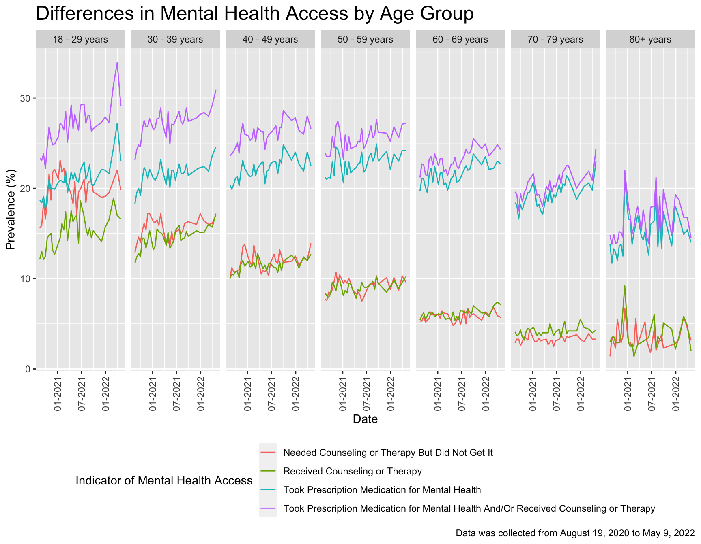
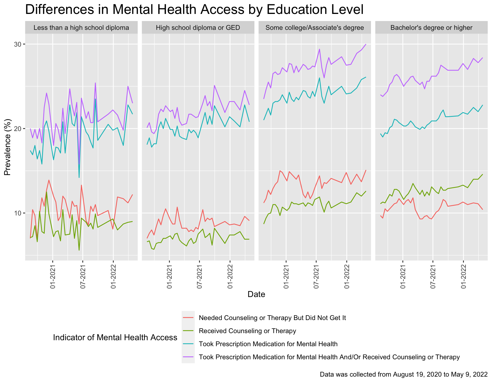
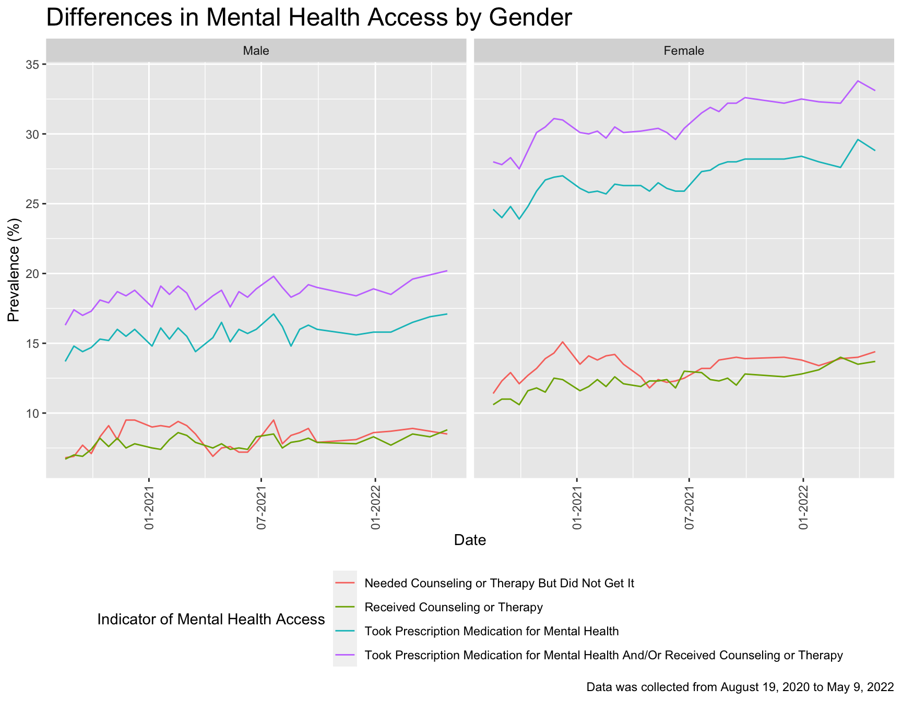
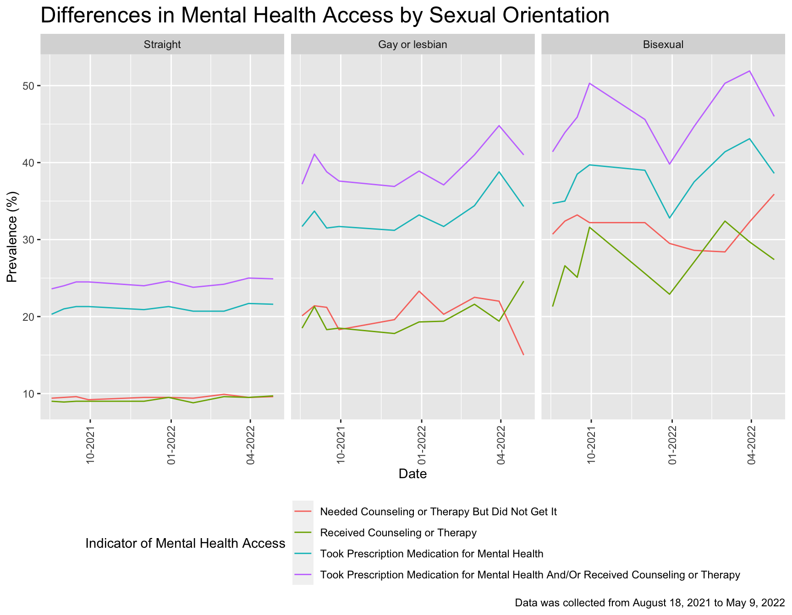

EDA by Demopgrahics
This page explores trends in mental health access by demographic characteristics: age group, education level, gender, sexual orientation, and race/ethnicity.
Age Group
I started by filtering the tidy dataset to only include age and residence in the United States. Then, I renamed the “80 years and above” subgroup to 80+ years. Afterward, I plotted the age group graph; however, because the start_date variable overlapped, the legend was difficult to view when I plotted the graph. As a result, I rotated the x-axis labels vertically and stacked the legend to two columns.
#Filtering the dataset to age and united states
age_plot <- tidydata |>
filter(group == "Age", state == "United States")
#Renaming the "80 years and above" subgroup to 80+ years
age_plot$subgroup[age_plot$subgroup == "80 years and above"] = "80+ years"
#Ploting the age group
age_plot |>
group_by(indicator, start_dates, subgroup) |>
ggplot(aes(x = start_dates, y = value, color = indicator)) +
geom_line() +
facet_grid(. ~ subgroup) +
labs(
x = "Date",
y = "Prevalence (%)",
title = "Differences in Mental Health Access by Age Group",
caption = "Data was collected from August 19, 2020 to May 9, 2022",
color = "Indicator of Mental Health Access") +
theme_gray() +
theme(
legend.position = "bottom",
plot.title = element_text(size = 18),
axis.text.x = element_text(angle = 90, vjust = 0.5, hjust = 1) # Rotate x-axis labels vertically
) +
scale_color_hue(h = c(100, 300)) +
guides(color = guide_legend(nrow = 4)) # Adding the legend guide adjustment
Main findings:
Based on the graph, it is clear that among the age groups, 18-29 have the highest values across all the indicators. Especially for the indicator of taking prescription medication for mental health and or receiving counseling, followed by the 30-39 age group, then 40-49 years. Since the data is captured from 2021 to 2022 during the pandemic, lockdown and transition to a virtual environment might cause tremendous pressure on these age groups. In addition, limited access to social life might burden the 18-29 age group. In addition, it is surprising to see that age groups from 60 and above have the lowest values of needed counseling or therapy but did not get it and received counseling or therapy. Maybe many of them are in their retirement, or this age group has a stigma around mental health because they might have a negative impression about having mental health issues. Therefore, they are less likely to admit they need counseling or therapy.
Education Level
I began by filtering the tidy dataset to only age and participants residing in the United States. In the next step, I re-leveled the education subgroup by creating a new variable, ed_name. Afterward, I used the new variable, ed_name, to create an education plot. Similar to the age plot, the x-axis labels and legend are difficult to view. So, I adjusted the x-axis labels to vertical and stacked the legend columns into two columns.
#Filtering the dataset to age and united states, re-level the subgroup, and plot the education plot
ed_plot=
tidydata |>
filter(group == "Education", state == "United States") |>
mutate(ed_name = forcats::fct_relevel(subgroup, c("Bachelor's degree or higher",
"Some college/Associate's degree", "High school diploma or GED", "Less than a high school diploma"))) |>
group_by(start_dates, ed_name, indicator) |>
ggplot(aes(x = start_dates, y = value, color = indicator)) +
geom_line() +
facet_grid(. ~ ed_name) +
labs(
x = "Date",
y = "Prevalence (%)",
title = "Differences in Mental Health Access by Education Level",
caption = "Data was collected from August 19, 2020 to May 9, 2022",
color = "Indicator of Mental Health Access") +
theme_gray() +
theme(
legend.position = "bottom",
plot.title = element_text(size = 18),
axis.text.x = element_text(angle = 90, vjust = 0.5, hjust = 1) # Rotate x-axis labels vertically
) +
scale_color_hue(h = c(100, 300)) +
guides(color = guide_legend(nrow = 4)) # Adding the legend guide adjustment
#View the education plot
ed_plot
Main findings:
Among four education groups, the Bachelor’s degree or higher and some college/Associate’s degree groups have the highest rates of taking prescription medication for mental health and/or received counseling. This is likely because individuals with higher educational attainment typically have better jobs with higher salaries and better benefits such as health insurance with greater coverage, which leads to better access to quality mental health services than those with lower educational attainment.
On the other hand, those who have a lower education level (high school diploma or GED and less than high school diploma groups) have the least value of needed counseling or therapy but did not get it and received counseling or therapy indicators because they might not have adequate resources to the services which resulting having the lowest values in term of the utilization of the counseling services.
Gender
tidydata |>
filter(
group == "Sex",
state == "United States") |>
mutate(gender = forcats::fct_relevel(subgroup, c("Male", "Female"))) |>
group_by(indicator, start_dates, gender) |>
ggplot(aes(x = start_dates, y = value, color = indicator)) +
geom_line() +
facet_grid(. ~ gender) +
theme_gray() +
theme(
legend.position = "bottom",
plot.title = element_text(size = 18),
axis.text.x = element_text(angle = 90, vjust = 0.5, hjust = 1)) +
guides(color = guide_legend(nrow = 4)) +
labs(
x = "Date",
y = "Prevalence (%)",
title = "Differences in Mental Health Access by Gender",
caption = "Data was collected from August 19, 2020 to May 9, 2022",
color = "Indicator of Mental Health Access")
Main findings:
Trends in mental health access by gender were stark. Women reported needing almost twice as much counseling or therapy for mental health as men, and these trends were consistent from 2020 to 2022. Women took more prescription medication for mental health and received more counseling or therapy for mental health than men. These trends slightly increased each year from 2020 to 2022.
Race/Ethnicity
The graph below explores differences in outcome variables by race/ethnicity.
tidydata |>
filter(group == "Race/Hispanic ethnicity", state == "United States") |>
mutate(race_ethnicity = forcats::fct_relevel(subgroup, c("Non-Hispanic Asian, single race", "Non-Hispanic Black, single race", "Hispanic or Latino", "Non-Hispanic White, single race", "Non-Hispanic, other races and multiple races"))) |>
mutate(
subgroup = replace(subgroup, subgroup == "Non-Hispanic Asian, single race", "Non-Hispanic Asian"),
subgroup = replace(subgroup, subgroup == "Non-Hispanic Black, single race", "Non-Hispanic Black"),
subgroup = replace(subgroup, subgroup == "Non-Hispanic White, single race", "Non-Hispanic White"),
subgroup = replace(subgroup, subgroup == "Non-Hispanic, other races and multiple races", "Non-Hispanic Multi-racial")) |>
group_by(indicator, start_dates, race_ethnicity) |>
ggplot(aes(x = start_dates, y = value, color = indicator)) +
geom_line() +
facet_grid(. ~ race_ethnicity) +
theme_grey() +
theme(
legend.position = "bottom",
plot.title = element_text(size = 18),
axis.text.x = element_text(angle = 90, vjust = 0.5, hjust = 1)) +
guides(color = guide_legend(nrow = 4)) +
labs(
x = "Date",
y = "Prevalence (%)",
title = "Differences in Mental Health Access by Race/Ethnicity",
caption = "Data was collected from August 19, 2020 to May 9, 2022",
color = "Indicator of Mental Health Access")
Main findings:
Trends by racial and ethnic groups were stark across all three years. Non-Hispanic multiracial group received the most prescription medication and/or counseling or therapy for mental health and needed counseling or therapy for mental health but did not receive it more than any other racial/ethnic group. Their outcomes worsened over time for all indicators, especially among those who took prescription medication for mental health, which increased 28% from August 2020 to May 2022. Non-Hispanic Black and Hispanic/Latino groups had very similar outcomes across all four indicators. Non-Hispanic Asians received and needed the least mental health care out of all racial/ethnic groups, although there was occasional variation in their outcomes over time. Non-Hispanic White group was the most consistent in their outcomes over time, especially for receiving counseling or therapy. This is likely because they had access to mental health as needed before the pandemic hit.
Sexual Orientation
The Household Pulse Survey started asking about sexual orientation mid-way through data collection; as such, data for sexuality was only available from August 2021 to May 2022.
tidydata |>
filter(group == "Sexual orientation",
state == "United States",
week_number %in% c(24:33)) |>
mutate(sexual_orientation = forcats::fct_relevel(subgroup, c("Straight", "Gay or lesbian", "Bisexual"))) |>
group_by(start_dates, sexual_orientation, indicator) |>
ggplot(aes(x = start_dates, y = value, color = indicator)) +
geom_line() +
facet_grid(. ~ sexual_orientation) +
theme_grey() +
theme(
legend.position = "bottom",
plot.title = element_text(size = 18),
axis.text.x = element_text(angle = 90, vjust = 0.5, hjust = 1)) +
guides(color = guide_legend(nrow = 4)) +
labs(
x = "Date",
y = "Prevalence (%)",
title = "Differences in Mental Health Access by Sexual Orientation",
caption = "Data was collected from August 18, 2021 to May 9, 2022",
color = "Indicator of Mental Health Access")
Main findings:
Mental health access strongly differed by sexual orientation. Individuals who identify as bisexual reported the highest trends in all four indicators compared with gay or lesbian and straight Americans, although they were closely followed by individuals who identify as gay or lesbian. Outcomes in mental health access for individuals who identify as bisexual showed the most variation over time. Individuals who identify as straight reported the least unmet need for counseling or therapy, and their outcomes were consistent over the 9-month period.